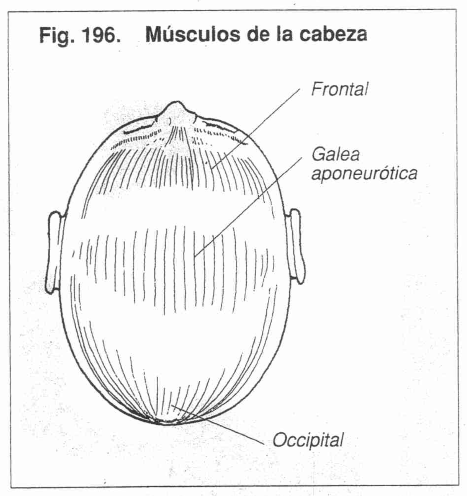
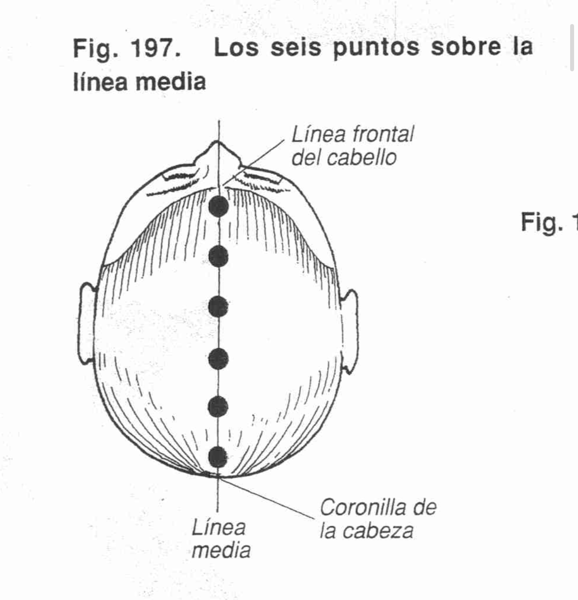
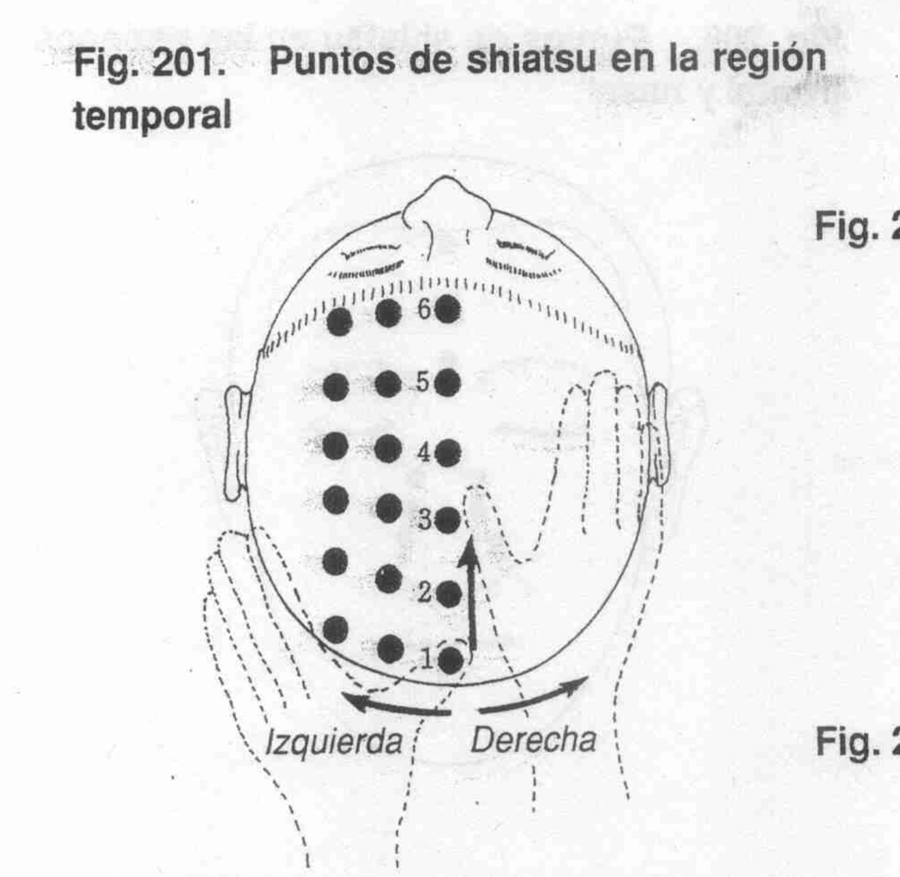
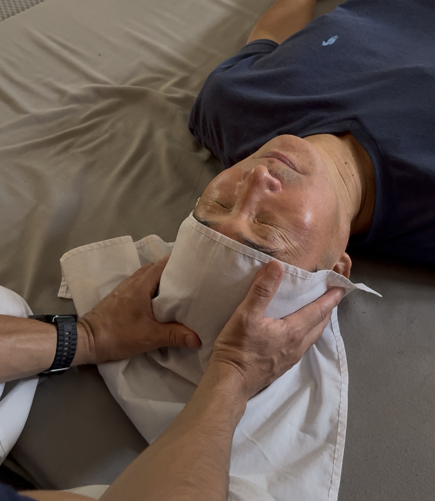
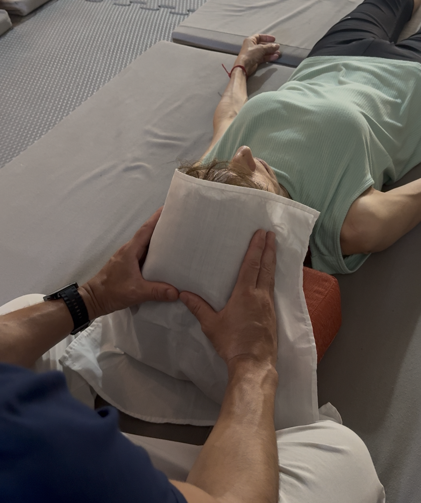
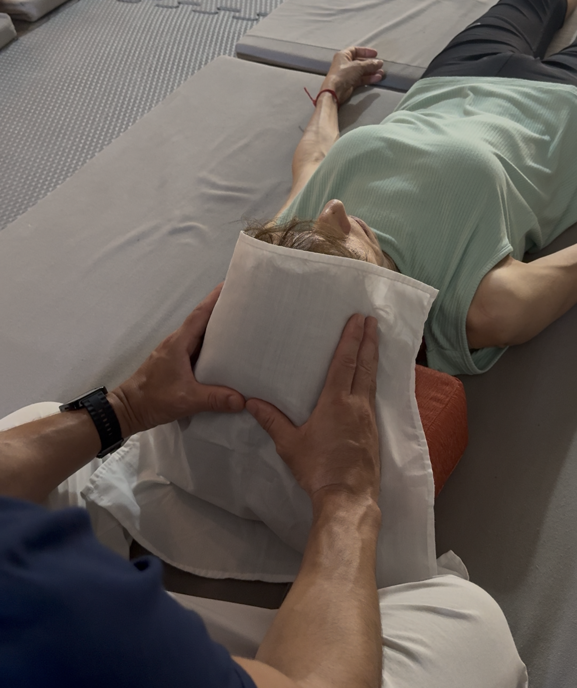

Shiatsu Namikoshi
Guía de Aplicación: Región Cráneo
Masterclass: Secuencia de Cráneo
Visualiza la técnica completa, el ritmo y la profundidad antes de proceder al estudio detallado.
PROCEDIMIENTO 1: Línea Central del Cráneo
Postura Paciente: Supino, sin almohada, piernas rectas.
Postura Terapeuta: Seiza, frente a la región.
Tipo de Presión: Pulgar sobre pulgar.
Número de Puntos: 6 puntos.
Dirección: Del inicio del cabello a la coronilla.
Frecuencia: 3 veces, 3 segundos.


PROCEDIMIENTO 2: Región Parietal
Postura Paciente: Supino, sin almohada, piernas rectas.
Postura Terapeuta: Seiza, frente a la región.
Tipo de Presión: Solo pulgar (sujeción temporal).
Número de Puntos: 3 x 6.
Dirección: Lateral desde la línea media.
Frecuencia: 1 vez, 3 segundos.


PROCEDIMIENTO 3: Región Parietal Línea Central
Postura Paciente: Supino, sin almohada, piernas rectas.
Tipo de Presión: Central (P sobre P) / Parietal (Simultánea en A).
Número de Puntos: 3 x 6 x 2.
Secuencia 1: Línea central (1 vez, 3 seg).
Secuencia 2: Parietal en "A" (1 vez, 2 seg).
Secuencia 3: Línea central (Final 5 seg).
 
